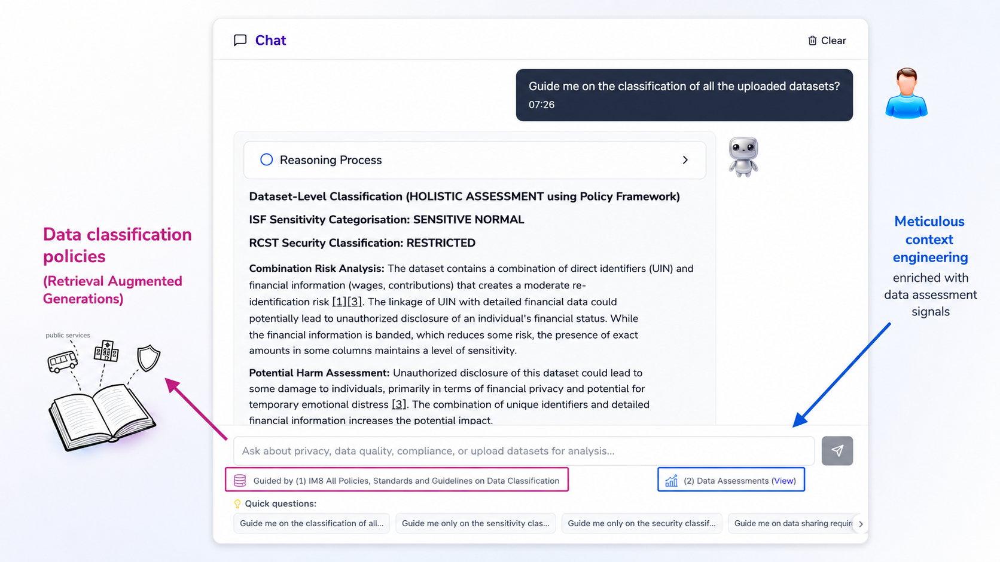
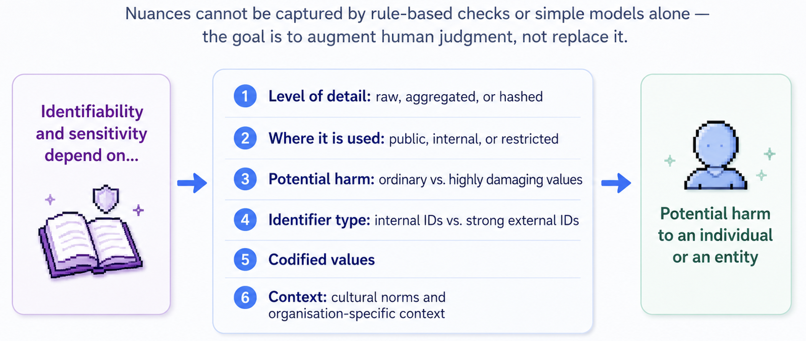
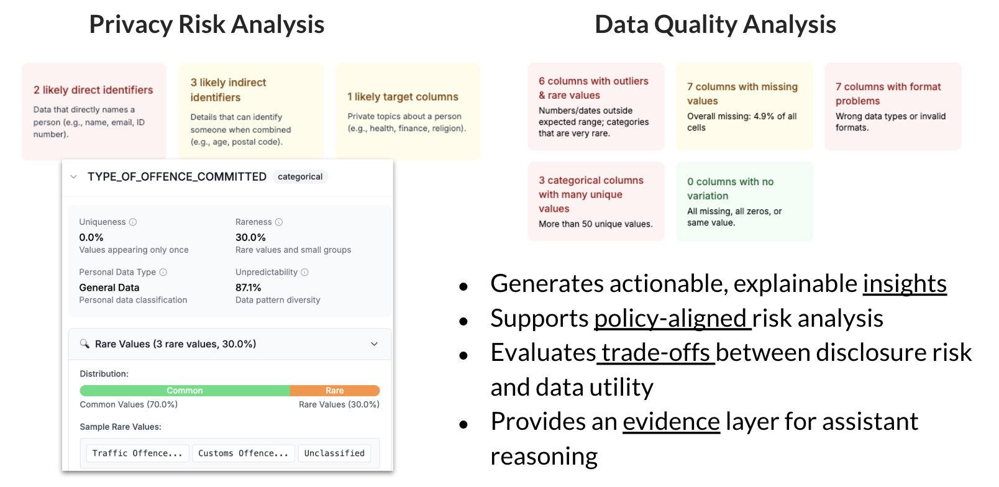
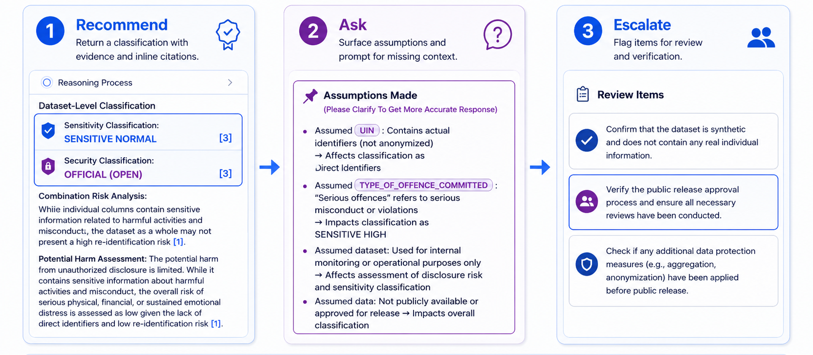
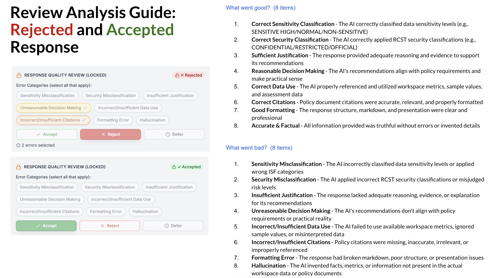
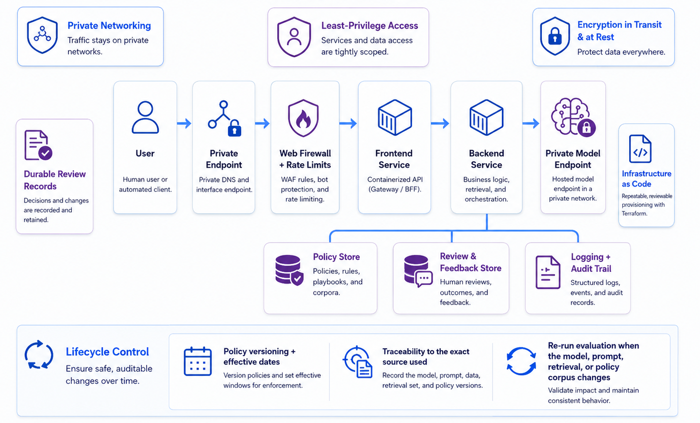
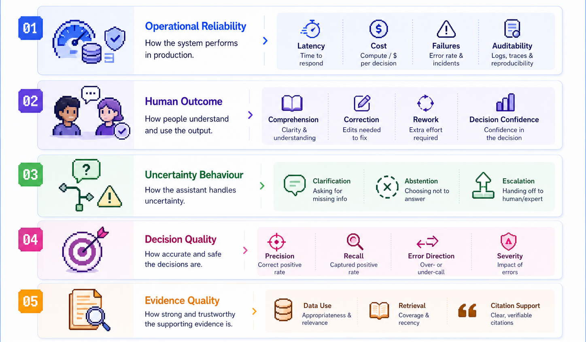
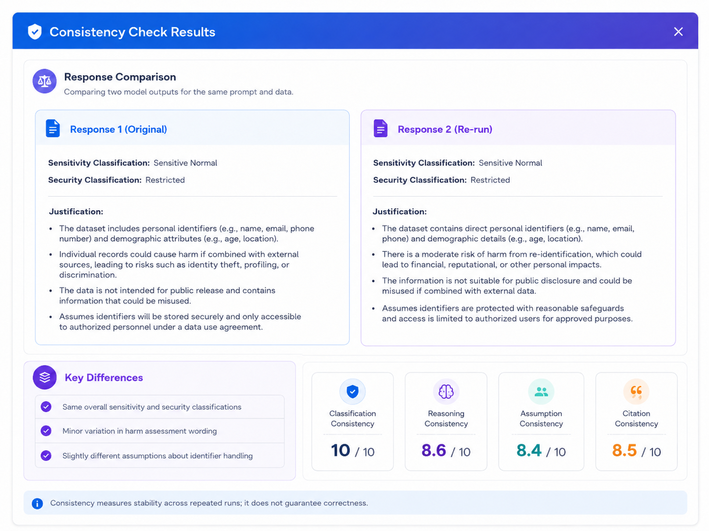

July 19, 2026
What I Learned Building an AI That Knows When Not to Decide
Eight lessons from leading the end-to-end development of an AI assistant for high-stakes data classification.
July 19, 2026
Eight lessons from leading the end-to-end development of an AI assistant for high-stakes data classification.

Data classification shapes almost every data-sharing decision, in both the private and public sectors. It sounds simple: inspect the data and assign a label. In practice, the right classification depends on the data, the policies governing it, and context that often exists only with its owner. It is a judgement problem, not a lookup.
I led a four-person team that took a data-classification assistant from problem discovery and user research through product design, engineering, secure deployment, and evaluation. The system helped public officers (government employees) understand the sensitivity of a dataset, the potential harm of disclosure, and the safeguards that should apply before it was shared.
The cost of a wrong call runs both ways. Over-classification delays legitimate work behind unnecessary controls and privacy measures. Under-classification can expose information that harms or re-identifies people.
The goal was therefore not to automate the decision. It was to bring data signals, policy requirements, and operational context into one evidence-backed recommendation that an officer could inspect and challenge.
The prototype was selected in the top 10% of more than 120 submissions to an internal incubator, drew interest from users across more than 20 public agencies, and progressed to a pilot. Its design and early evaluation findings were later presented at an international privacy symposium and a public data engineering meetup, where they were well received by security leaders from major technology companies and Singapore's public and private sectors.
This article distils eight lessons from building it.
In high-stakes applications, the most useful AI systems may not make decisions for people. They improve how people reason about those decisions.
Accurate classification requires more than inspecting column names or sample values. The decision may depend on information that is not present in the file:
whether an identifier is meaningful only within one system or can be linked to a real person;
whether a coded value represents something ordinary or potentially sensitive;
whether combinations of fields increase re-identification risk;
and who will receive the data, how it will be used, and which policies apply.

The same dataset may require a different classification when its purpose, recipient, or sharing conditions change.
A sound decision therefore draws on three sources of evidence: the data itself, the policies governing it, and context of data sharing. That reframing changed the product goal. The system was designed to help an officer understand why a classification applied and reach a more informed and defensible decision.
The officer remained accountable. The assistant made the relevant evidence easier to find, interpret, and challenge.
The first build included a broader assessment layer with privacy-risk and data-quality scores. The idea was to provide a fuller picture of the dataset before classification.
After testing the concept with users and policy stakeholders, that layer was removed.

The scores introduced more risk than value. A confident but misleading risk score was worse than no score at all, so the product was narrowed to evidence-backed classification guidance.
The product was narrowed to the job users needed most and the system could support more reliably: reasoning through the classification itself.
Signals such as field types, missing values, rare categories, formatting issues, and cross-column patterns were computed with deterministic code. These checks were predictable, inspectable, and easy to test.
The remaining work involved ambiguous descriptions, overlapping policies, and context missing from the dataset. A questionnaire could collect context, though it could not inspect the data. A general chat model could synthesise inputs, though its conclusions would be hard to verify without controlled retrieval and structured evidence.
The architecture assigned each component a clear role:
Code computed measurable signals from the data.
Retrieval supplied relevant policy evidence.
The language model synthesised the evidence, explained the recommendation, and asked for missing context.
The officer made the final decision.
The backend gathered five inputs into a shared workspace: the selected datasets, computed signals, retrieved policy passages, conversation history, and user-provided context. The model then produced structured guidance containing the recommendation, evidence, citations, assumptions, and review items, and user feedback was captured for evaluation.
The assistant had three possible behaviours:
Recommend when the evidence was sufficient, with the supporting data signals and policy clauses.
Ask when the decision depended on context held by the user, such as whether an identifier could be linked to a person.
Escalate when policies conflicted, evidence remained insufficient, or the case required authorised review.

The main engineering challenge was defining when the assistant should choose each path. Language models often turn missing context into assumptions and present those assumptions with confidence.
The response therefore separated:
the recommended classification;
data evidence;
policy citations;
model assumptions;
unresolved questions;
and items requiring human verification.
This separation made each claim easier to inspect. A fact observed in the data, a policy requirement, a model assumption, and an authorised decision carry different levels of authority and should never appear interchangeable.
The assistant used retrieval-augmented generation to bring relevant policy into each recommendation. In policy-heavy workflows, retrieval quality depends on more than semantic similarity. A useful passage must preserve the rule being applied, enough surrounding context to retain its meaning, its source and version, and the metadata needed for verification.
The retrieval pipeline therefore used clause-aware, citation-ready passages.
We also tested HyDE—Hypothetical Document Embeddings—which generates a hypothetical relevant answer and uses its embedding for retrieval. It can help with vague queries or wording that differs from the source material. Our dominant queries were simple and predictable, such as asking for the classification of an uploaded dataset.
HyDE added another model call without producing a meaningful gain across Recall@k, Precision@k, MRR, citation relevance, or downstream response quality, so we disabled it on the default path.
Grounding also had to be visible in the interface. Users could inspect the data signals available to the assistant, open the policy source behind a claim, and distinguish facts from policy requirements, model assumptions, and unresolved questions.
Early user testing revealed recurring failure patterns. We reviewed the observed failures and grouped recurring patterns into a domain-specific taxonomy covering misclassification, insufficient justification, incorrect data use, unsupported citations, missing assumptions, hallucination, and formatting errors.
The taxonomy was built directly into the review interface. Users could accept, reject, or defer a response, select the relevant issue, and add free-text comments when needed.
This provided more diagnostic signal than a thumbs-up or thumbs-down while requiring less effort than asking every reviewer to describe each problem from scratch. It also helped distinguish failures that can look similar at first glance, such as a wrong classification and a plausible classification supported by the wrong citation.
The structured feedback made review easier and converted real failures into labelled evaluation data for analysis, expert adjudication, and regression testing.
This workflow follows a practical evaluation pattern: inspect individual traces, derive a task-specific error taxonomy, collect structured expert feedback, and convert recurring failures into targeted tests.

The system ran in an isolated private cloud environment with containerised frontend and backend services, private access to model and storage endpoints, least-privilege permissions, managed request filtering, durable review records, and infrastructure provisioned through Terraform.
Traffic stayed within private connectivity. Firewall controls provided request filtering and rate limiting. Interactions, reviews, and feedback were stored for auditability, while infrastructure as code made deployments reproducible.
These controls mattered because the assistant could process potentially sensitive datasets. Data protection had to cover the full path: before the data reached the model, while it was processed, and after a recommendation was produced.
Deployment was only one part of production maturity. Policies, models, prompts, retrieval settings, and document corpora all change over time. A mature service needs policy versioning, traceability to the exact sources used, and an evaluation suite that reruns whenever a significant component changes.

The first benchmark used 30 synthetic datasets derived from representative metadata. Each dataset received the same question and was tested three times.
Sensitivity classification reached about 86% accuracy, while security classification reached about 60%. The main failure mode was over-classification: when context was missing, the model often chose the stricter label.
This conservative bias may reduce some disclosure risk, but it also blocks legitimate data use, adds unnecessary approvals, and reproduces the original bottleneck.
The benchmark had clear limits. It was small, class-imbalanced, synthetic, and light on real-world noise, linked datasets, and expert adjudication. I treated the results as an early reliability signal.
A stronger evaluation covered five layers:

To evaluate repeated runs at scale, we used a more capable model as an LLM judge. The weighted rubric covered four dimensions: classification consistency, decision-rationale consistency, assumption consistency, and citation consistency.
The weighted rubric was G-Eval-inspired, with explicit natural-language criteria and structured scoring. We applied it pairwise to compare repeated responses.
This made consistency checks scalable across repeated outputs. It still measured stability rather than correctness. The next evaluation stage was to calibrate the judge against expert reviews and measure its false-pass and false-fail rates.

One recurring failure involved unfamiliar identifiers. The system could see an ID column, but the file did not reveal whether the identifier was internal or externally linkable. The model sometimes assumed the more sensitive interpretation and recommended a stricter classification.
The missing input was contextual. The system needed to ask whether the identifier could resolve to a real person, and the evaluation suite needed cases that tested this behaviour.
Each meaningful failure was recorded across five dimensions: observed failure, root cause, potential risk, required system change, and regression test.
This turned user feedback into engineering progress.
The hardest part was deciding what the assistant could infer, what evidence it had to show, when it needed more context, and whether it was improving a decision rather than merely producing a convincing answer.
One user described the system as:
“A check and balance for data classification that I can easily justify and communicate to my boss.”
That was the real goal: making judgment more informed, consistent, and defensible.